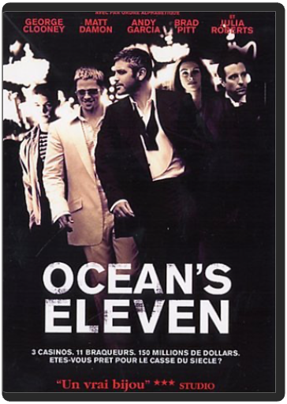

Retrouvez des courts m?©trages irrempla?ßables, des fables et contes qui ont marqu?© des g?©n?©rations enti?®res'ĶContient¬?: - Mickey et le haricot magique (Mickey and the Beanstalk - 1947) - 4 autres courts m?©trages  Un film de Steven Spielberg est toujours un événement en soi. Mais lorsque le réalisateur s'associe à Tom Cruise, cela donne un film de science-fiction comme on en voit rarement. Une véritable perle. En 2054, le meurtre a disparu grâce à la mise en place d'un système de prévention/détection/répression. La Précrime, une agence menée par John Anderton, est aidée de trois extra-lucides pour combattre le crime. Mais ceux-ci dévoilent qu'Anderton va commettre un meurtre. Celui-ci doit alors se battre contre ses propres hommes pour sauver sa peau. Dans Minority Report, Steven Spielberg crée un futur sombre et étouffant, inspiré de Philip K. Dick, et a le génie d'y inclure un univers visuel incroyable. Il n'y pas une minute du film sans une trouvaille technologique surprenante. Tom Cruise est parfait dans cette course contre la montre qui allie l'humour (noir) au drame, l'action à la tension. Rares sont les films de science-fiction qui traitent le genre avec autant de respect. Minority Report en fait partie. Un futur classique du cinéma à posséder de toute urgence. —Marc Maesen  Grégory Lioubov, un officier des services secrets russes, est envoyé à Monaco afin de surveiller les agissements d'un puissant homme d'affaires. Dans le cadre de cette mission, son équipe recrute Alice, une surdouée de la finance. Soupçonnant sa trahison, Grégory va rompre la règle d'or et entrer en contact avec Alice, son agent infiltré. Naît entre eux une passion impossible qui va inexorablement précipiter leur chute.  Gonflé, Guillaume Canet ! Pour son premier long métrage, l'acteur n'a pas choisi la facilité : plutôt que s'installer dans le confort de la chronique intimiste, à l'instar de Sophie Marceau ou de Vincent Perez il signe avec une réussite étonnante une satire sur la célébrité, l'un des genres les plus casse-gueule qui soit. Grinçant et jubilatoire, jamais narcissique, toujours personnel, bouffon et désespéré, Mon idole surprend par l'originalité de son ton. Comme si le surréalisme était revisité par les frères Coen : même sens de l'absurde et du dérisoire, focus sur des détails incongrus – la cuisine observée du point de vue d'un foie de veau en train de griller ! –, le tout dans un écrin qui permet à Canet d'assouvir son goût pour le plan large et le spectacle. Et son amour des acteurs, jetés à corps perdus dans leurs rôles : François Berléand, en producteur cynique et blasé, prouve une fois de plus l'étendue de son registre, de la folie douce à la tendresse à fleur de peau, en passant par la violence psychopathe ; la débutante et sublime Diane Kruger, dans un rôle difficile, d'épouse maléfique et complice ; enfin, Guillaume Canet lui-même dans un rôle quasiment auto-parodique de jeune chien fou aux dents longues, prêt à tout pour accéder à la célébrité. Fable sur le pouvoir, les excès du star-system, les dérives de la télévision ou les relations de désir et de séduction qui nous animent tous, Mon idole distille autant de plaisir que de malaise. Beau coup d'éclat pour un coup d'essai. —Sylvain Lefort |  ocean's elevensteven soderbergh Un casting d'enfer. Remake de L'Inconnu de Las Vegas, réalisé en 1959 et interprété par Frank Sinatra, Ocean's Eleven compte ce qui se fait de mieux en matière d'acteurs. George Clooney, Brad Pitt, Matt Damon et Julia Roberts se partagent l'affiche de cette comédie policière réussie de bout en bout. Steven Soderbergh avait réalisé un carton avec Erin Brockovich (déjà avec Julia Roberts). Il revient en force avec l'histoire de dix hommes qui décident de cambrioler, en une nuit, les trois plus grands casinos de Las Vegas. En tête, George Clooney qui décide par la même occasion de ruiner l'amant de son ex-femme (Andy Garcia, comme toujours parfait) et de la récupérer. Bien sûr, et pour notre plus grand plaisir, tout ne se passe pas comme prévu. Humour, suspense, amour et situations burlesques s'enchaînent dans ce divertissement particulièrement brillant. Steven Soderbergh met en scène une mécanique parfaitement huilée qui aligne les moments de bravoure aussi bien dans la comédie que dans l'action. Un film à voir et à revoir. —Marc Maesen  Produit neuf sous blister. Vendeur professionnel, expédition garantie sous 24h à 48h ouvrables en Colissimo suivi ! |

Julien
Collection Total:
2 016 Items
2 016 Items
Last Updated:
Dec 23, 2023
Dec 23, 2023


 Made with Delicious Library
Made with Delicious Library